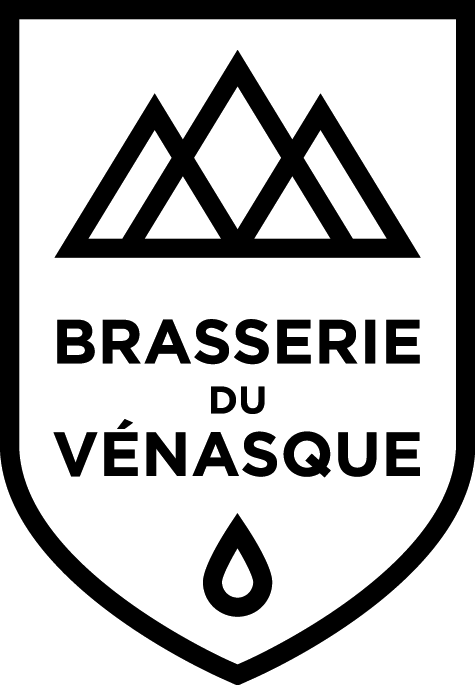
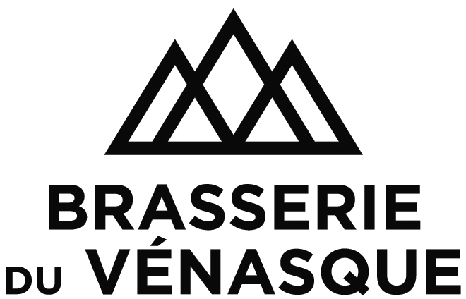

Logos &
marques
Le logo de la Brasserie du Vénasque combine trois éléments signature : les trois sommets pyrénéens stylisés (le Vénasque et les sommets qui dominent la brasserie), le nom de la marque en typographie Gotham Bold, et la goutte d'eau sur le blason (rappel de l'eau de source de Montauban-de-Luchon, matière première signature). Deux versions sont disponibles : le blason (forme d'écu, version compacte signature) et le logo classique (version verticale, plus lisible en grand format).
{kind=link}

{kind=link}
{kind=link}

{kind=link}
Zone de protection
Conserver autour du logo une zone vide équivalente à la hauteur des montagnes. Aucun élément graphique ou texte ne doit empiéter sur cette zone.
Tailles minimales
Web : 80 px de large minimum pour le blason, 200 px pour le classique.
Print : 25 mm de large minimum pour le blason, 60 mm pour le classique.
Format préféré
Blason : usage signature, étiquettes, packaging compact, favicons, réseaux sociaux.
Classique : header site, papier en-tête, signatures email, supports verticaux.
Ce qu'il ne faut pas faire
Ne pas déformer, recolorer avec d'autres couleurs que blanc/noir, ajouter d'effets (ombre, biseau, dégradé), ni incliner le logo. Toujours utiliser les fichiers officiels.
Fichiers source
Les fichiers .eps et .ai en CMJN haute définition sont conservés en interne pour les besoins d'impression professionnelle. Les versions PNG ci-dessus (à fond transparent) sont destinées aux usages web et bureautique. Pour toute reprise sur supports print, utiliser les fichiers source vectoriels via le studio graphique partenaire.